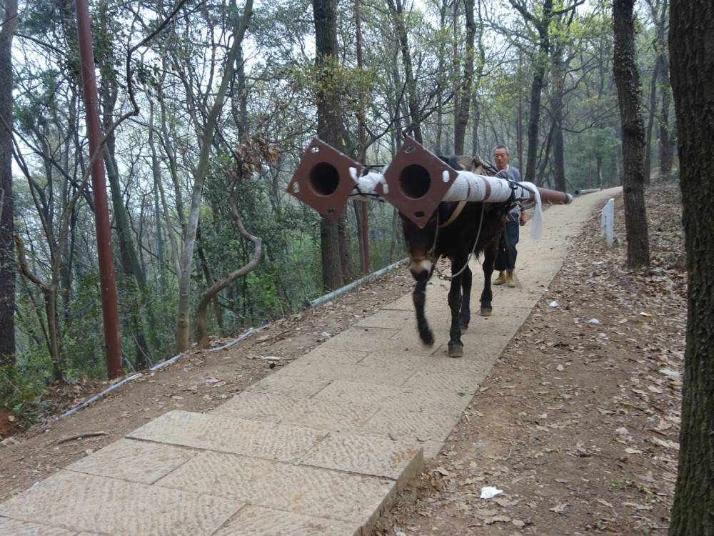

从市场需求到被企业感知，到制定产品计划，到需要程序员去实现的整个流程里，程序员是最末端的那个环节，不知道为何而劳作，成了个常态。@ruanyf:晨起爬山，只见山路上一头骡子，正背负极重的铁管。有那么一阵，它停下来，不知累了还是不想走了，监工立即拿棍子戳它。我突然觉得，中国很多程序员就像这头骡子，背负重压，被推着前行，却不知为何。 
#创业#从程序员，到做市场运营，到自己创业当老板，就是想离市场越近越好，至少知道自己为何而工作。@ruanyf:晨起爬山，只见山路上一头骡子，正背负极重的铁管。有那么一阵，它停下来，不知累了还是不想走了，监工立即拿棍子戳它。我突然觉得，中国很多程序员就像这头骡子，背负重压，被推着前行，却不知为何。